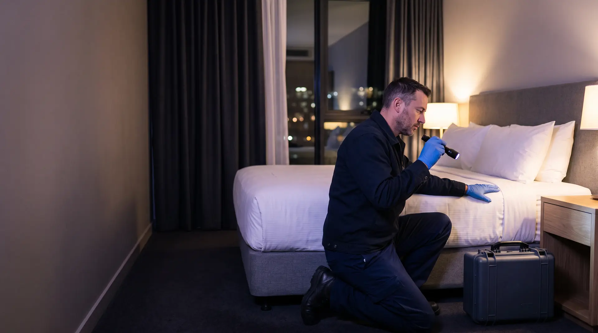
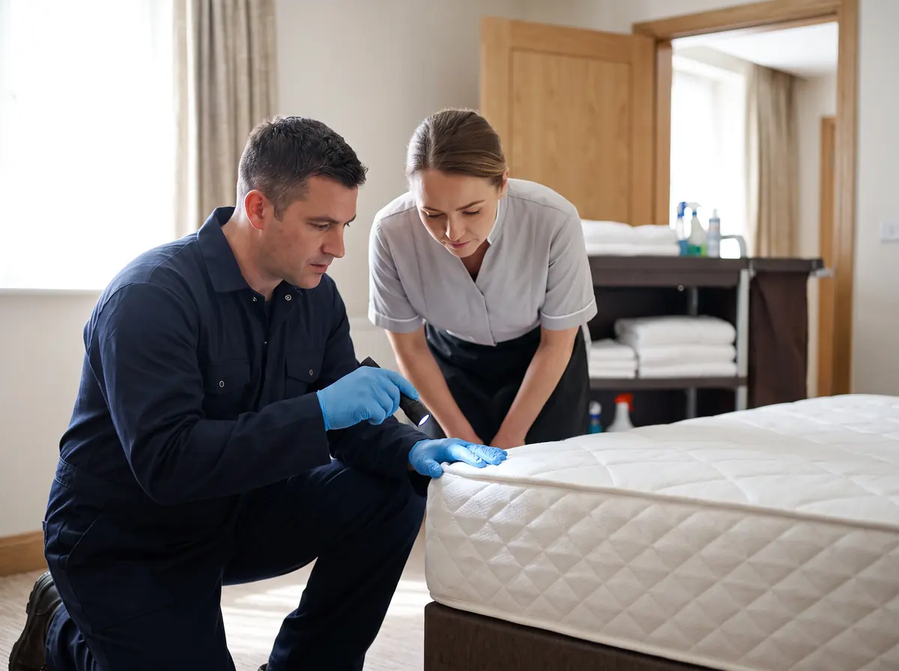
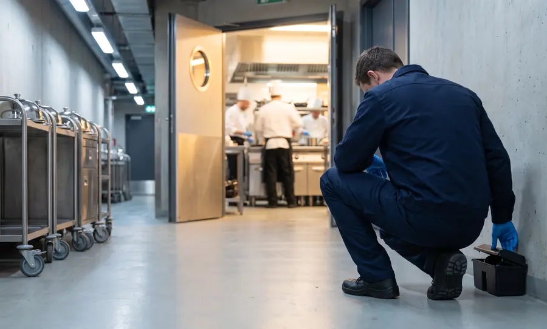
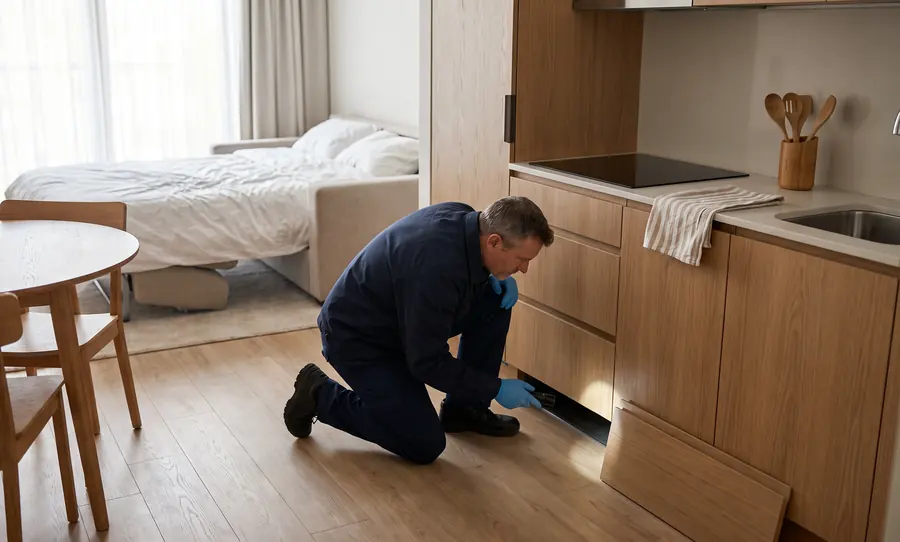
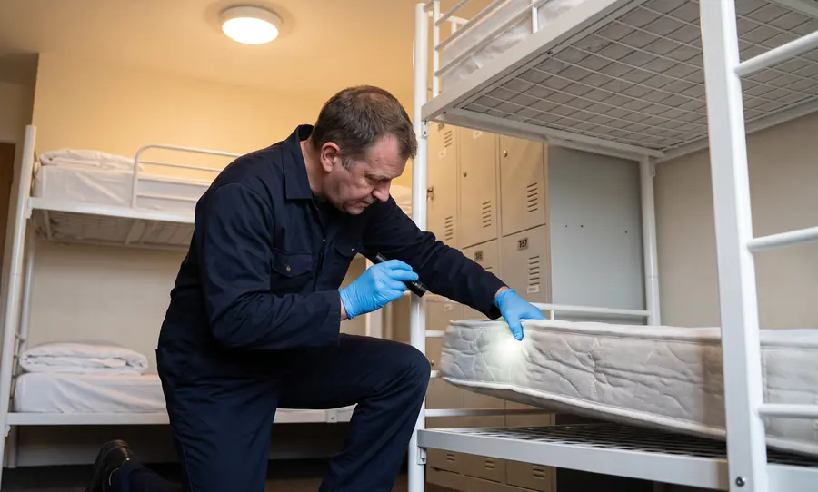
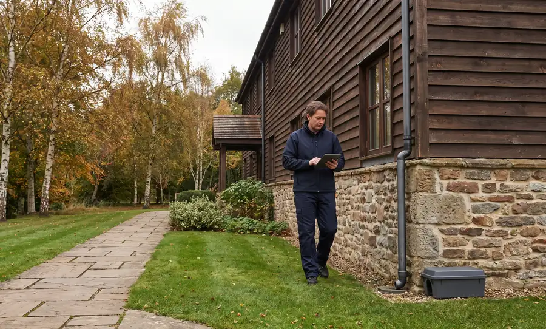

2 раза в месяц
Плановые обследования на насекомых: клопы, тараканы, муравьи, мухи (пп. 98, 101 СанПиН 3.3686-21).

Постоянная защита номеров, ресторана и подвалов от клопов, тараканов и грызунов по системе IPM: осмотры не реже 2 раз в месяц, протокол на случай жалобы гостя и журнал для проверки Роспотребнадзора. Выезжаем без броской символики.
Жалоба гостя на клопов — выезд в течение 3 часов, 24/7
0 из 5
Чего-то не хватает — на бесплатном обследовании покажем, что добавить и в каком порядке.
Заказать бесплатное обследованиеКоротко. Гостиница — объект особого эпидемиологического значения (п. 98 СанПиН 3.3686-21). Обследования на насекомых — не реже 2 раз в месяц, оценка заселённости грызунами — каждый месяц, мусоросборные камеры — не реже раза в месяц. С 1 сентября 2026 года действуют санитарные правила СП 2.1.4284-26: насекомых, грызунов и следов их жизнедеятельности в помещениях быть не должно, а обработки проводят без гостей и персонала.Актуально на ноябрь 2026 года
2 раза в месяц
Плановые обследования на насекомых: клопы, тараканы, муравьи, мухи (пп. 98, 101 СанПиН 3.3686-21).
Каждый месяц
Оценка заселённости грызунами, по её итогам — дератизация гостиницы (пп. 108, 110). Мусоросборные камеры — отдельный осмотр (п. 133).
Без гостей
Выборочную дезинсекцию проводят в номерах, где нашли насекомых, в отсутствие людей, затем — влажная уборка и проветривание (п. 127). Родентициды острого действия и порошковые приманки в гостиницах запрещены.
Вопросы из проверочного листа при предоставлении гостиничных услуг — приложение № 2 к приказу Роспотребнадзора от 20.07.2026 № 578, применяется с 4 октября 2026 года (текст на «Гаранте»). Справа — что делаем мы, чтобы на каждый вопрос был ответ «да».
| Вопрос | Что проверяют | Как закрываем |
|---|---|---|
| № 28 | Уборка, дезинсекция и дератизация контейнерной площадкип. 8 и приложение 1 СанПиН 2.1.3684-21 | Площадка — в периметре дератизации: станции и осмотр при каждом визите. |
| № 39 | В помещениях нет насекомых, грызунов и следов их жизнедеятельностип. 14 СП 2.1.4284-26 | Плановые осмотры номеров и служебных зон, точки контроля, устранение очагов. |
| № 40 | Дезинсекцию и дератизацию проводит организация, осуществляющая дезинфекционную деятельность, в отсутствие работников и гостейп. 14 СП 2.1.4284-26, п. 130 СанПиН 3.3686-21 | Договор с лицензированной организацией; обработки — в свободных номерах и в согласованные окна. |
| № 41 | Кратность плановых обследований на членистоногихпп. 88, 98, 101, 130 СанПиН 3.3686-21 | Визиты не реже 2 раз в месяц, каждая находка — в журнале. |
| № 42 | Ежемесячная оценка заселённости грызунамипп. 88, 98, 108, 110, 130 СанПиН 3.3686-21 | Оценка по точкам контроля каждый месяц, итог — в отчёте. |
| № 43 | Обследование систем мусороудаления и мусоросборных камер не реже раза в месяцп. 133 СанПиН 3.3686-21 | Мусорокамера — отдельная точка в схеме и строка в журнале. |
Какими документами ответить на эти вопросы и что спросят на других объектах — в разборе «Проверочные листы Роспотребнадзора 2026».
Клопы в гостинице — не повод закрывать этаж. Шесть шагов от звонка с ресепшена до записи в журнале: первый шаг делает гостиница, дальше работаем мы вместе с хаусхипингом.

Роспотребнадзор советует гостям при заселении искать насекомых и следы их жизнедеятельности. Если номер не в порядке, гость вправе потребовать другой номер, уменьшения цены или отказаться от договора с полным возмещением убытков, а при отказе — обратиться в Роспотребнадзор (памятка ведомства).
Новый номер — на другом этаже, не по соседству. Номер с сигналом снять с продажи, бельё — в закрытый мешок и сразу в прачечную, мебель из номера не выносить.
Номер с сигналом и соседние — слева, справа, сверху и снизу. Ищем клопов, яйца, сброшенные шкурки и тёмные точки: швы матраса, каркас и изголовье кровати, плинтусы, рамы картин, розетки.
Выборочная дезинсекция номеров, где нашли клопов, — в отсутствие людей (п. 127 СанПиН 3.3686-21): швы мебели, плинтусы, проходки коммуникаций. Если находки в нескольких номерах подряд — обрабатываем блок по этажам и стояку.
Проветривание по инструкции к средству и влажная уборка. Когда номер можно продавать снова, называем до начала работ.
Часть средств не действует на яйца клопов, поэтому без контроля очаг возвращается (ЦГОН Роспотребнадзора). Нашли живых — повторная обработка.
Где нашли, что и чем обработали, результат контроля. Если гость обратится в Роспотребнадзор, у гостиницы будут документы о принятых мерах.

Профилактика клопов в гостинице держится на горничных: они бывают в каждом номере каждый день. Инструктаж проводим на объекте, на настоящей кровати: где искать и что делать, чтобы не разнести клопов по этажу.
Не стряхивать бельё и не класть его в общую тележку — сразу в мешок. Закрыть номер, сфотографировать находку и сообщить старшей горничной или администратору.
Перед стартом: бесплатное обследование → программа и схема точек → график осмотра номерного фонда → инструктаж горничных. Для больших отелей с рестораном и банкетами частоту визитов увеличиваем в программе.
Без броской символики. Приезжаем к служебному входу в согласованное с администратором время.
Работы ставим под загрузку отеля: в свободные номера и в окна, согласованные с хаусхипингом.
Дезинсекцию и дератизацию проводим в отсутствие гостей и персонала — так требует п. 14 СП 2.1.4284-26.
В гостиницах они запрещены (п. 127 СанПиН 3.3686-21). Приманки — в закрытых станциях, вне доступа гостей и детей.

Приезжают с багажом гостей. Осмотр номера и соседних, выборочная дезинсекция, контроль через 10–14 дней.

Кухня, бар, мини-кухни апартаментов, подвал. Гели и ловушки — в санитарное окно ресторана.

Подвал, склад, мусорокамера, контейнерная площадка. Станции снаружи, ловушки без яда внутри.

Ресторан, зона завтраков, контейнеры. Световые ловушки на кухне, контроль отходов.

Тёплые стены, кухня, номера с мини-барами. Приманки — вне доступа гостей.

Кровля, козырьки, террасы: закрытие проёмов и противоприсадочные системы.

Сотни номеров, ресторан, банкеты и подвалы: отдельные графики для номерного фонда и для кухни.

Кухни в номерах: тараканы и муравьи наравне с клопами. Осматриваем и спальную зону, и кухонный блок.

Двухъярусные кровати и частая смена гостей: спальные места осматриваем при каждом визите.

Большая территория и отдельные корпуса: периметр от грызунов, осмотры корпусов, кухни и прачечной.
| Документ | Кому нужен |
|---|---|
| Договор с лицензированной организацией | Роспотребнадзор — вопрос № 40 проверочного листа |
| Программа пест-контроля гостиницы | Собственник, управляющая компания, сеть |
| Схема точек контроля с номерами | Роспотребнадзор, инженерная служба |
| Журнал обследований и учёта численности | Роспотребнадзор — вопросы № 41–43 |
| График осмотра номерного фонда | Хаусхипинг, генеральный менеджер |
| Акты выполненных работ | Бухгалтерия, Роспотребнадзор |
| Перечень средств с СГР и инструкциями | Охрана труда, Роспотребнадзор |
| Ежемесячный отчёт | Генеральный менеджер, собственник |
| Лицензия и удостоверения специалистов | Все проверяющие |
Образцы — в материалах: программа пест-контроля и журнал пест-контроля.
Цена зависит от:
Визиты по графику, осмотр номерного фонда по ротации, расходники для точек контроля, журнал и акты, ежемесячный отчёт, инструктаж горничных.
Расчёт — после бесплатного обследования. Сумма абонентской платы фиксируется в договоре.
Рассчитать для моей гостиницыРазовая обработка номера — от 3 500 ₽ за выезд. При переходе на годовой договор стоимость первой обработки учитывается в расчёте.
Гостиница — объект особого эпидемиологического значения: обследования на насекомых — не реже 2 раз в месяц, оценка заселённости грызунами — ежемесячно (пп. 98, 101, 110 СанПиН 3.3686-21). Обработки проводят по результатам обследований и при появлении вредителей.
Переселить гостя в номер на другом этаже, снять номер с продажи, бельё отправить в прачечную в закрытом мешке и вызвать специалиста. Мы осмотрим номер и соседние — слева, справа, сверху и снизу, обработаем очаг и проведём контрольный осмотр через 10–14 дней.
Обычно нет. Выборочную дезинсекцию проводят в отдельных номерах, где нашли насекомых, в отсутствие людей (п. 127 СанПиН 3.3686-21). Соседние номера осматриваем и обрабатываем, если в них тоже есть находки.
После проветривания по инструкции к средству и влажной уборки. Срок зависит от средства, поэтому называем его до начала работ.
Разовая обработка номера от клопов — от 3 500 ₽ за выезд: локализация очага, уничтожение клопов и акт выполненных работ. Абонентское обслуживание гостиницы считаем после бесплатного обследования; при переходе на годовой договор стоимость первой обработки учитываем в расчёте.
По проверочному листу (приказ Роспотребнадзора от 20.07.2026 № 578): нет ли насекомых и грызунов, кто и как проводит обработки, соблюдается ли кратность обследований — 2 раза в месяц на насекомых и ежемесячно на грызунов, обследуются ли мусоросборные камеры и контейнерная площадка.
Да. Выезжаем без броской символики, ночью и в выходные — без наценки. Срочный выезд — в течение 3 часов по Москве и Московской области, 24/7.
Да. Инструктаж проводим на объекте: признаки клопов, порядок действий при находке и как не разнести насекомых с бельём по этажам.
Разовая обработка убирает очаг. Пест-контроль — постоянная система: осмотры по графику, точки контроля, журнал и обучение персонала, чтобы очаг не повторился. Подробнее — в материале «Пест-менеджмент или разовая обработка».
Да. С 1 марта 2025 года услуги дезинфекции, дезинсекции и дератизации лицензируются. У ООО «Центр дезинфекционных услуг» действующая лицензия № Л064-00111-77/01942445 — запись можно проверить в реестре лицензий Роспотребнадзора.
Пест-менеджер осмотрит номера, кухню, подвал и мусорокамеру, проверит договор и журнал. После выезда вы узнаете, что исправить до ближайшей проверки, и получите расчёт обслуживания.